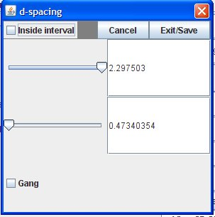

Filtering Out Peaks
This button provide options for filtering out(omitting) peaks. The filtering has an
interactive mode that uses only the values from one Field. Advanced filtering allows
using values from several fields to filter out peaks.
Options
- Interactive-Omit peaks based on values from one Field. There is no need to
Set Filter or Clear Omitted Peaks
- New(Or'd) - Starts a new and sequence that will be Or'd with the previous
And sequences
- Add(And) to Previous- Adds current condition to the current And sequence
- Clear Omitted Peaks- Clears current conditions to determine which peaks
are to be omitted.
- Set Filter-Calculates the sequence numbers to be omitted and notifies
listeners that the omitted sequence has changed. One of the listeners is the
3D QViewer for the peaks.
Fields
| row | col | channel | intensity | d-spacing |
| time | qx | qy | qz | h |
| k | l | h int offset | k int offset |
l int offset |
| seq nums | run nums | det nums | reflag |
Specifying Field Values
The GUI for numeric fields that can span a range of values is
|
 |
| Title- field | | Sliders for min val to max val |
| Check Inside Interval to omit peaks whose field values are
between the values |
| Cancel-Cancels operation | | Exit/Save will exit and save choice |
|